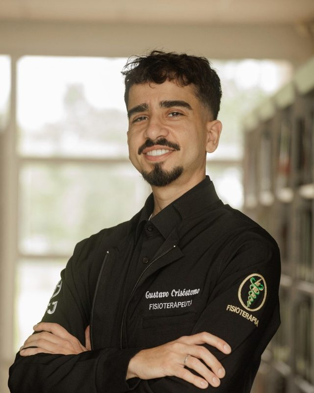

Fisioterapia Traumato-Ortopédica
Avalia e trata dores, lesões e limitações de músculos, articulações e coluna, incluindo a reabilitação após cirurgias ortopédicas.
Indicada para
Fisioterapia e nutrição em Caldas Novas, com atendimento humanizado e estrutura pensada para a sua recuperação.
Agende sua avaliação5,0 no Google ·Seg. a sex., 8h às 20h · Sáb., 8h às 12h
Hérnia de disco, dor na coluna, lesões, pós-operatório, problemas respiratórios ou alimentação: veja qual especialidade é indicada para o seu caso.
Avalia e trata dores, lesões e limitações de músculos, articulações e coluna, incluindo a reabilitação após cirurgias ortopédicas.
Indicada para
Técnicas manuais e osteopáticas aplicadas como parte do tratamento fisioterapêutico, para melhorar a mobilidade e reduzir a dor.
Indicada para
Reabilitação voltada a quem pratica esporte: tratamento da lesão, critérios claros e retorno progressivo e seguro aos treinos e competições.
Indicada para
Melhora a função respiratória e a capacidade física em todas as idades, do bebê ao idoso.
Indicada para
Plano alimentar construído a partir da sua rotina, em cada fase da vida, e integrado à reabilitação e ao esporte.
Indicada para
Uma equipe multidisciplinar que conversa entre si para construir o melhor caminho para a sua recuperação.

Fisioterapeuta
Traumato-ortopédica e desportiva
CREFITO: 395766-F
Ver perfil →Nutricionista
Nutrição clínica, materno-infantil e esportiva
CRN: 26281-P
Ver perfil →Fisioterapeuta
Fisioterapia cardiorrespiratória
CREFITO: 370442-F
Ver perfil →
Fisioterapeuta
Fisioterapia ortopédica e osteopatia
CREFITO: 433876-F
Ver perfil →

Salas equipadas, ambiente tranquilo e uma equipe que trabalha em conjunto. Conheça a nossa história e a nossa estrutura.
Conhecer a clínica →Veja o que nossos pacientes dizem no Google e como chegar à clínica, no Itaici 2, em Caldas Novas.
Não. O fisioterapeuta tem autonomia para avaliar e tratar, então você pode agendar diretamente. Se tiver exames, laudos ou relatório médico, traga na primeira consulta: eles ajudam na avaliação.
Exames de imagem, laudos, relatórios de cirurgia (se houver) e a lista de medicamentos que você usa. Venha com roupa confortável, que permita avaliar a região da queixa.
Sim. A fisioterapia respiratória pediátrica é feita pela Dra. Ana Paula Lopes, e o acompanhamento nutricional de gestantes, bebês e crianças, pela Dra. Derislainy Tinan.
Pode, e é um dos nossos diferenciais: os profissionais trocam informações sobre o seu caso para que o cuidado seja contínuo entre as especialidades.
Horário de atendimento
Atendemos de segunda a sexta, das 8h às 20h, e aos sábados, das 8h às 12h.
(64) 99239-9515 tinanfisioterapia@gmail.com @tinanfisioterapia
Agendar pelo WhatsApp